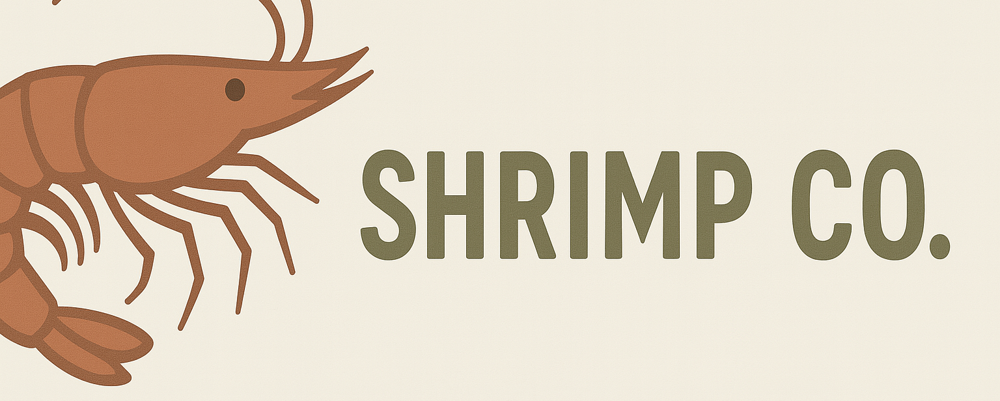

Lab 7 - PAT & Dynamic Routing
Shrimp Co. requires enterprise-grade infrastructure for reliable operations. Implement full redundancy with dual distribution switches, OSPF dynamic routing, and PAT for scalable internet access.

Tip: Individual topology files are available in the diagrams folder on my Github
Configuration Tasks
Layer 2 Configuration
Ensure access ports, trunks, VLAN databases, and port-channels are configured to span Layer 2 domain across all access and distribution switches.
- VLAN 10 – Sales
- VLAN 20 – Engineering
- VLAN 99 – IT
1. Configure Gateway SVIs (VRRP)
On both distribution switches (sea-mdf-dsw1 and sea-mdf-dsw2), configure SVIs with the following addresses and enable VRRP:
- VLAN 10:
10.1.10.1(VRRP VIP) - VLAN 20:
10.1.20.1(VRRP VIP) - VLAN 99:
10.1.99.1(VRRP VIP)
Assign actual IPs (.2 and .3) to the switches.
Configure VRRP priority so that dsw1 is preferred for VLANs 10 & 99, and dsw2 is preferred for VLAN 20.
2. Enable OSPF on Routers and Distribution Switches
- Use OSPF process ID 1 across all routing devices.
- Use exact network statements to advertise networks into OSPF (do not summarize).
- Advertise:
- All point-to-point links between routers and distribution switches
- Loopback interfaces
- VLAN interfaces (distribution switches only)
- Configure all interfaces in area 0.
- Use the command
passive-interface defaultunder OSPF configuration mode. Form adjacencies only on /30 transit networks and between VLAN 99 SVIs.
"Multi-Vendor Simulation"
These labs simulate a common real-world scenario: a multi-vendor environment.
While OSPF operates the same under the hood, vendor syntax will differ. Reference the documentation for both platforms to configure it correctly.
3. Configure PAT on Routers
- On both
sea-mdf-r1andsea-mdf-r2, configure PAT (port address translation / overload). - Use standard access-list 1 to specify exact source subnets for NAT/PAT.
4. OSPF Default Route Injection
- Configure a static default route with a next-hop of the Volt Communications provider edge router.
- Inject this default route into your OSPF process so that it is learned by both distribution switches.
Success Criteria
- VRRP
- VLAN 10 & 99 are Master, VLAN 20 is Backup on
sea-mdf-dsw1.
- VLAN 10 & 99 are Master, VLAN 20 is Backup on
- OSPF Convergence
- Each distribution switch has three full adjacencies; each router has two.
- SeaMart Server Reachability
- Every host can ping SeaMart's IP address (
123.123.123.123).
- Every host can ping SeaMart's IP address (
- OSPF Default Route Injection
- Default route on the distribution switches is learned dynamically via OSPF.
- VRRP Efficiency & Security
- Configure VRRP timers for faster failover and enable MD5 authentication.
- OSPF Packet Capture
- Use
tcpdumpon a distribution switch interface where you expect to see OSPF Hellos.
- Use
- Name Resolution
- Enable Linux hosts to resolve and curl seamart.com with either method you've learned so far.
Verification Commands
# NAT translations
show ip nat translations
# OSPF
show ip ospf neighbor
show ip ospf interface [Ethernet0/1]
# Default route in routing table
show ip route# Verify VRRP
show vrrp [brief]
# OSPF
show ip ospf neighbor
show ip ospf interface [Ethernet5]
show ip ospf summary# Validate HTTP reachability
curl http://123.123.123.123
# Show routed path to a destination
traceroute 123.123.123.123
# Test DNS resolution
nslookup seamart.comQuestions to Explore
- When designing a network, why might you choose VRRP instead of HSRP?
- From your OSPF Hello packet capture, what information can you extract about neighbors and timers?
- Why is your OSPF learned default route on the distribution swiches labeled differently than the others?
- What advantages does dynamic routing like OSPF offer over static routing?